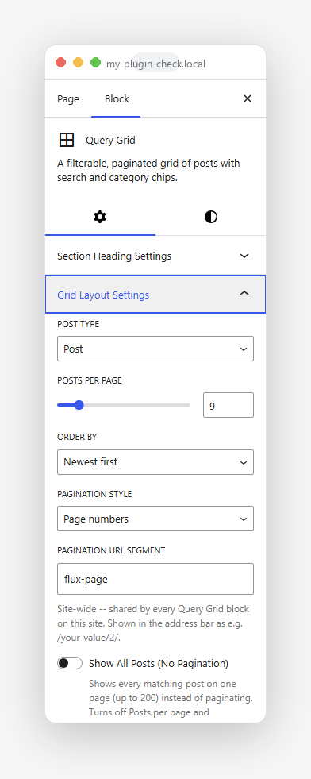
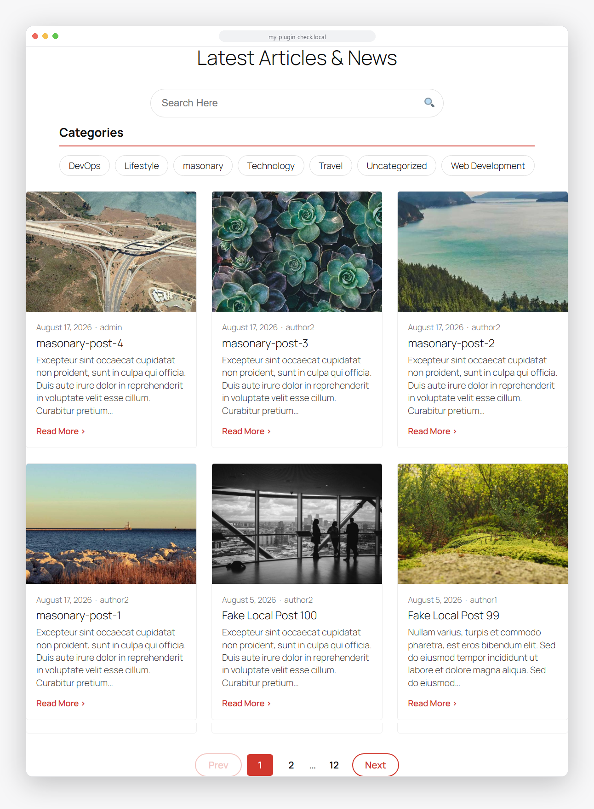
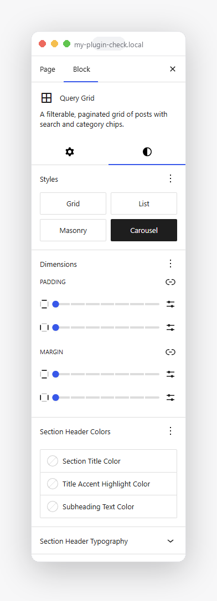
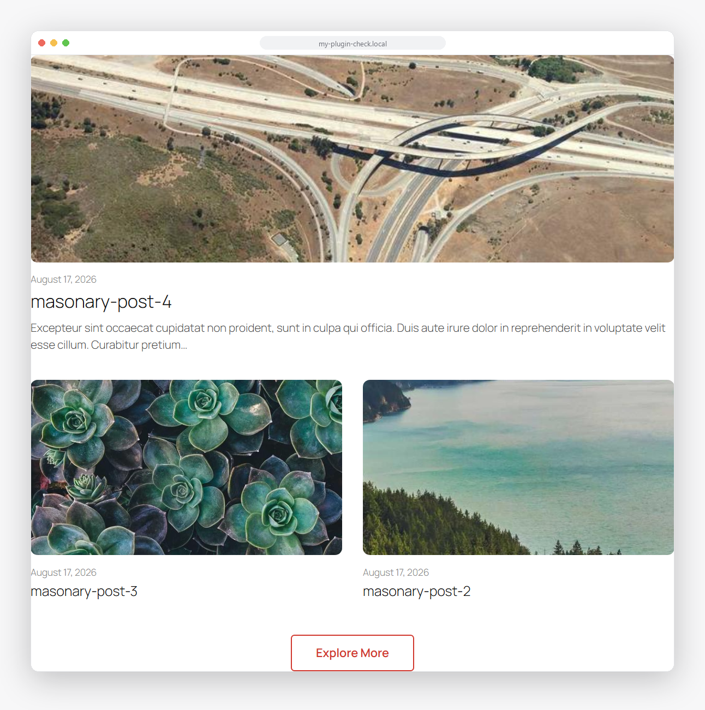
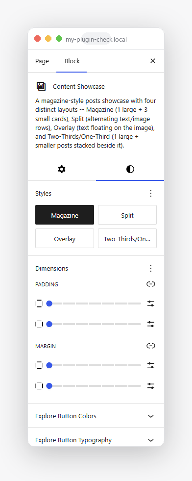
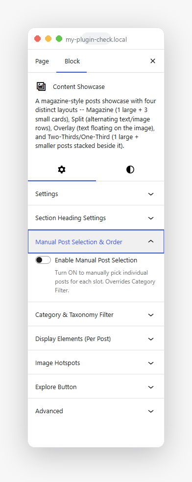
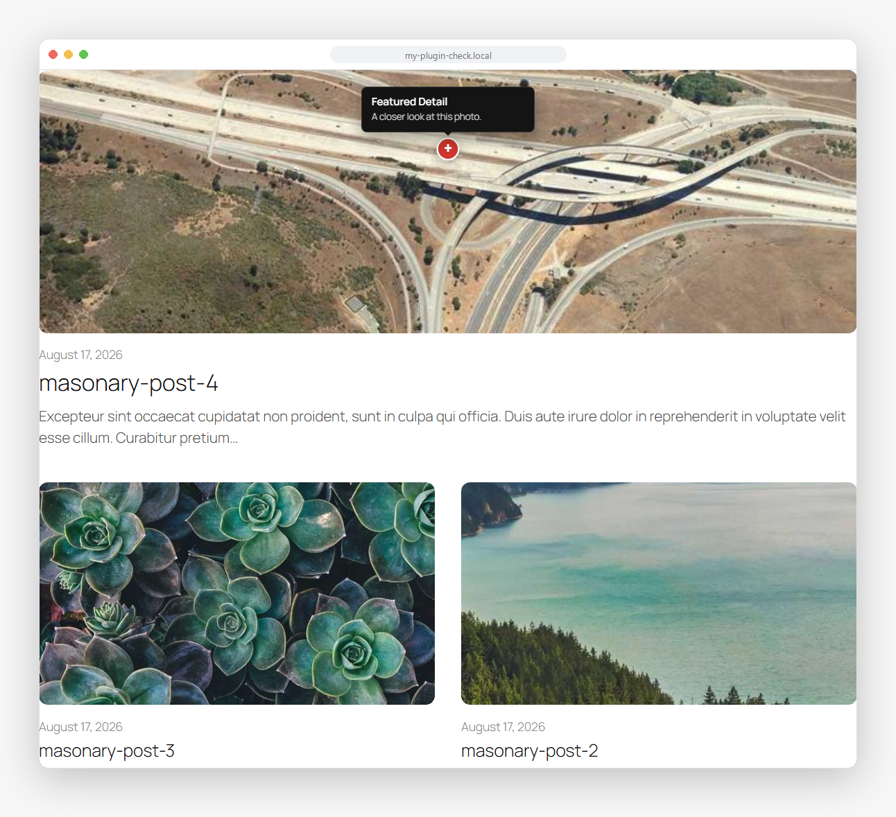
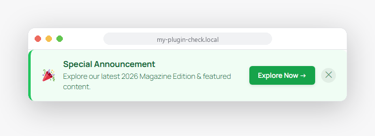
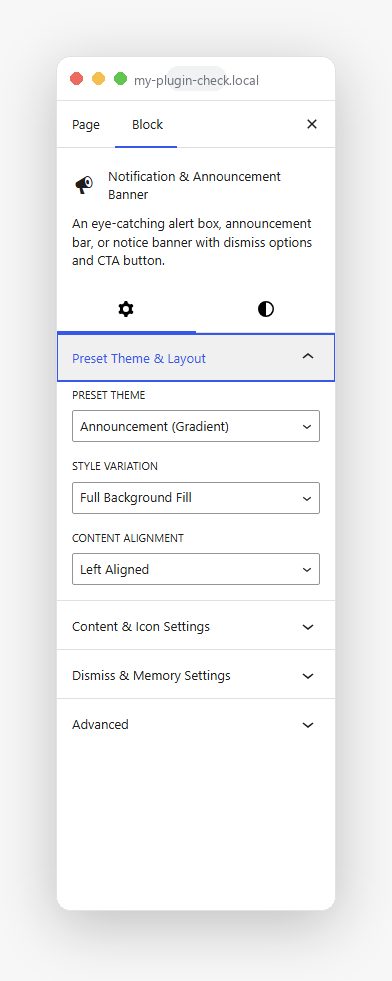

Flux Blocks Documentation
Version 0.1.0 · Three native Gutenberg blocks: Query Grid, Content Showcase, and Notification Banner.
Flux Blocks adds three focused, modern blocks to the WordPress block editor -- a filterable/paginated posts grid, a magazine-style content showcase with interactive image hotspots, and a dismissible notification banner. Everything is a native block: no separate page-builder interface, no plugin-specific settings screen to learn.
Installation
- In your WordPress admin, go to Plugins → Add New → Upload Plugin.
- Choose the
flux-blocks.zipfile included in your download and click Install Now. - Click Activate Plugin.
That's it -- no database setup, no required settings page, no external service to connect. Flux Blocks works on a fresh install with zero configuration.
Requirements
| WordPress | 6.8 or newer |
|---|---|
| PHP | 7.4 or newer |
| Browser (editor) | Any modern browser with the block editor enabled |
Getting Started
Every Flux Blocks block is added the same way as any core WordPress block:
- Open the block editor on any post or page.
- Click the + inserter, or type
/followed by the block name (e.g./Query Grid). - Look under the Flux Blocks category, or search by name.
- Click the block's Settings tab (gear icon) in the sidebar for content/behavior options, or the Styles tab (circle icon) for the layout picker.

Every block's Settings tab groups its options into collapsible panels -- click a panel title to expand it.
Query Grid
A filterable, paginated grid of posts -- works with Posts, Pages, or any custom post type registered on your site.

Grid layout with search, category filter pills, and numbered pagination.
Layouts
Pick a layout from the block's Styles tab -- each is a complete visual treatment, switchable any time without losing your settings.
- Grid -- an even card grid, responsive column count
- List -- a single-column stacked layout
- Masonry -- variable-height staggered cards
- Carousel -- a swipeable, arrow-navigated slider

The Styles tab's layout picker -- Grid, List, Masonry, Carousel.
Settings
| Post type | Any public post type registered on your site. |
|---|---|
| Posts per page | How many posts load per page/screen. |
| Order by | Newest first, oldest first, or title. |
| Pagination style | Numbered pages, a "Load more" button, or "show all" (no pagination). |
| Pagination URL segment | Customize the URL path used for page links, e.g. /your-page/flux-page/2/. Site-wide setting. |
| Search & filters | Optional search bar and taxonomy filter pills (multi-select within one taxonomy). |
| Sidebar layout | Move search/filters into a left or right sidebar column. |
| Columns | Separate column counts for mobile, tablet, and desktop. |
| Colors & fonts | Full color controls for pills/pagination/meta text; font family + weight pulled from your active theme. |
<a href> a search engine can follow directly.
Content Showcase
A magazine-style showcase of up to three posts, shown automatically (latest posts) or hand-picked one by one.

Magazine layout with the optional "Explore More" button.
Layouts
- Magazine -- one large card + smaller ones beside it
- Split -- alternating text/image rows
- Overlay -- text floating on the image
- Two-Thirds -- a featured post beside a stacked column

The Styles tab's layout picker -- Magazine, Split, Overlay, Two-Thirds.
Settings
| Post type | Any public post type registered on your site. |
|---|---|
| Mode | Automatic (latest posts, optionally filtered) or Manual (hand-pick each of the up-to-three slots). |
| Section heading | Optional heading with a colored accent word and a subheading. |
| Per-slot display | Control whether each slot shows its image, date, and excerpt. |
| Image hotspots | Add clickable pins anywhere on a post's image; each opens a small popover with its own title, text, and optional link. |
| Explore button | Optional CTA button with a custom label, link, and colors. |

Content Showcase's Settings tab -- manual post selection expanded.

An image hotspot's popover, open on click.
Notification Banner
A dismissible announcement bar or alert box for promos, notices, and updates.

The Success preset with the Left Border Accent style variation.
Presets & styles
Combine any of the 4 color presets with any of the 5 visual styles for 20 total looks:
- Presets: Announcement, Info, Success, Warning
- Styles: Gradient Background, Left Accent, Soft Card, Glassmorphism, Outline

Preset Theme + Style Variation picker, in the block's Settings tab.
Settings
| Icon | Emoji, a built-in dashicon, or a small SVG icon set. |
|---|---|
| Title & message | Editable text for both. |
| CTA button | Optional, with its own label, link, and open-in-new-tab option. |
| Dismiss button | Optional "remember dismissal" -- stored in the visitor's browser so a dismissed banner stays hidden on their next visit. |
| Colors & typography | Background, text, accent, and button -- font family/weight pulled from your active theme. |
FAQ & Troubleshooting
Does this plugin work with custom post types?
Yes. Query Grid and Content Showcase both let you choose any public post type registered on your site from the block's own Settings tab -- not just Posts.
Does Query Grid's pagination reload the page?
No. Clicking a page number fetches and swaps in new results without a full page reload. The address bar still updates to a real, shareable URL, and that URL correctly server-renders the right page if opened directly (e.g. by a search engine crawler or a shared link).
Can I change how the pagination URL looks?
Yes -- Query Grid's Settings tab has a "Pagination URL Segment" field (shown when Pagination Style is "Page numbers"). It's a site-wide setting: changing it updates every Query Grid block on the site at once.
How many posts can Content Showcase display?
Up to three -- it's a compact, curated showcase rather than a full listing. Use Query Grid for a larger, paginated set.
Will this slow down my site?
Query results are cached automatically (and cleared the moment relevant content changes), and the frontend uses the lightweight WordPress Interactivity API instead of jQuery or another JS framework. Nothing is loaded on pages that don't use these blocks.
What happens to my data if I delete the plugin?
Everything Flux Blocks created -- cached query results and the pagination URL setting -- is removed on deletion. Deactivating the plugin, on the other hand, leaves everything untouched in case you reactivate later.
A block isn't showing my styling changes -- what should I check first?
Confirm the change was made on the right tab -- content/behavior options live under Settings (gear icon), layout and color/typography controls live under Styles (circle icon). If a change still isn't visible on the frontend, try a hard refresh (some browsers cache stylesheets aggressively).
Changelog
| Version | Notes |
|---|---|
| 0.1.0 | Initial release: Query Grid (Grid/List/Masonry/Carousel layouts, search, taxonomy filters, sidebar layout, numbered/load-more pagination, show-all option, SEO-friendly pagination URLs), Content Showcase (Magazine/Split/Overlay/Two-Thirds layouts, automatic/manual post selection, section heading, image hotspots, Explore More button, color controls), and Notification Banner (4 presets × 5 style variations, icon picker, dismiss-and-remember, CTA button). |
Support
Questions, bug reports, or feature requests -- reach out via your CodeCanyon item page's comment section, or the support contact listed on the item page. Please include your WordPress version, PHP version, and the block/setting involved so it can be reproduced quickly.